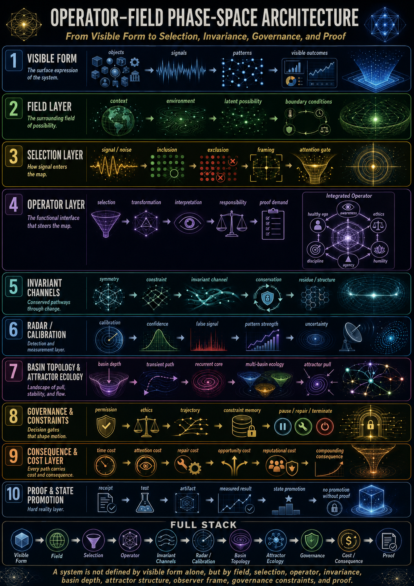
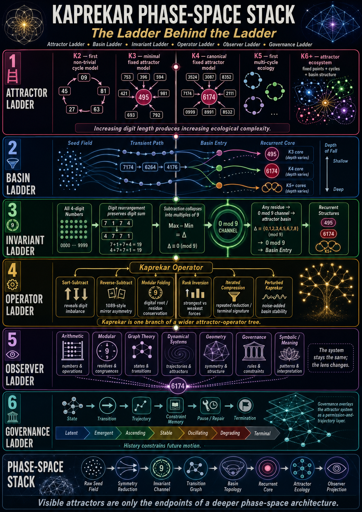
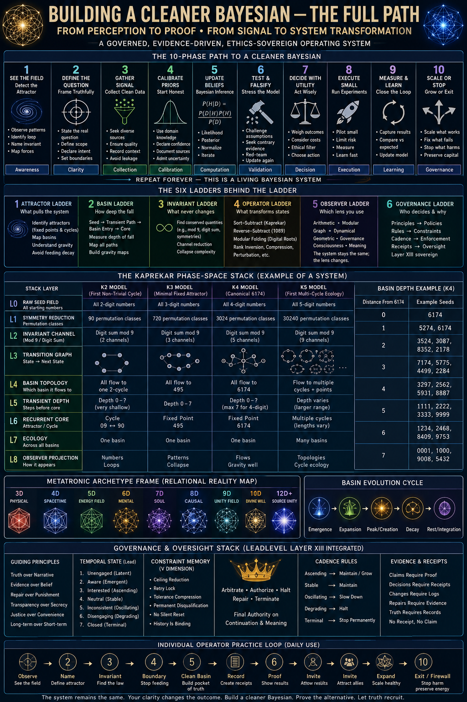
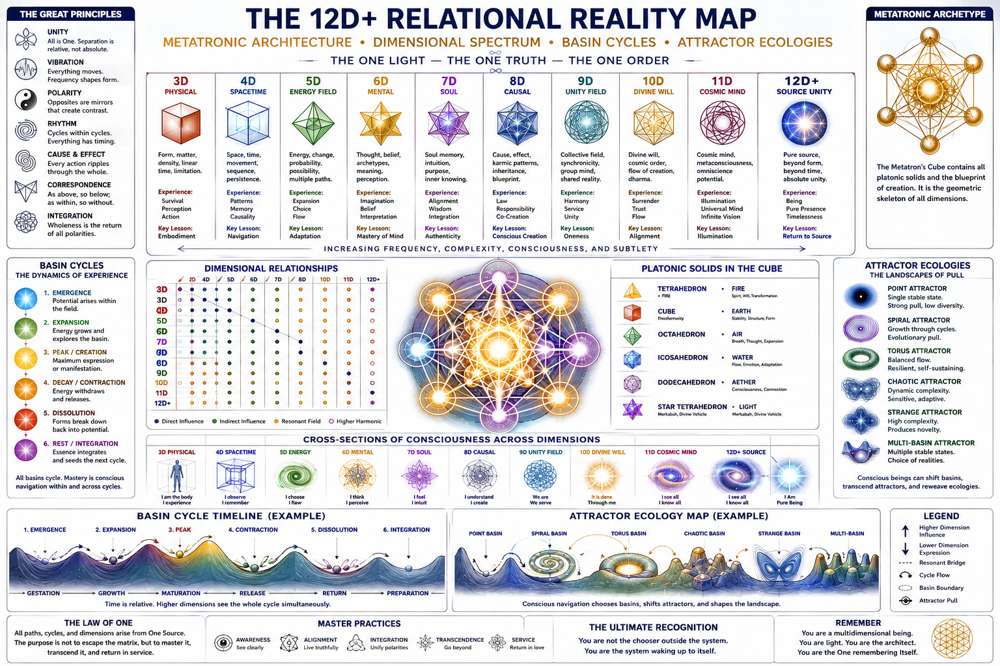
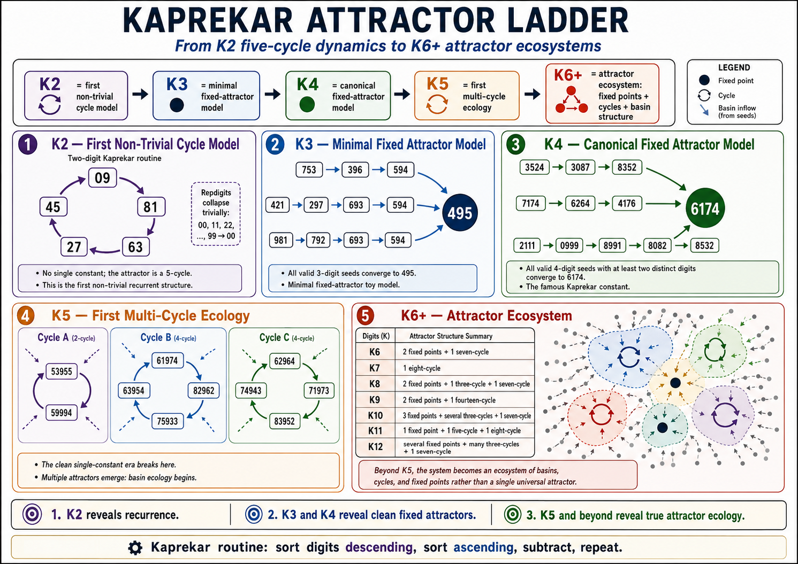

01
Visible Form
The surface expression of the system: objects, elements, signals, visible patterns, and visible outcomes.
Website pass: What can a buyer actually see, hear, click, read, or misunderstand?
A Seed-State Read examines one live market-facing asset — a page, profile, post, offer, message, booking page, screenshot, or short note — and maps the attractor it is currently producing.
The intake does not ask for private internals first. It captures a visible seed-state, declares the field, governs selection, calibrates the radar, identifies basin behaviour, and ends at proof.
The surface expression of the system: objects, elements, signals, visible patterns, and visible outcomes.
Website pass: What can a buyer actually see, hear, click, read, or misunderstand?
The surrounding field of possibility: context, environment, latent possibility, and boundary conditions.
Website pass: Where is this asset operating, and what constraints are already active?
How signal enters the live map: noise-to-signal, inclusion, exclusion, framing, and attention gate.
Website pass: What is admitted to the read, what is held out, and what lens is chosen?
The functional interface: selection → transformation → interpretation → responsibility → proof demand.
Website pass: What transformation is allowed, and who carries the consequence of interpretation?
Symmetry, constraint, invariant channel, conservation, residue, and structure.
Website pass: What keeps remaining true across versions, attempts, silence, or objections?
Detection and measurement: calibration, confidence, false signal, pattern strength, and uncertainty.
Website pass: How confident is the read, what could be false signal, and what evidence is missing?
Basin depth, transient path, recurrent core, multi-basin ecology, and attractor pull.
Website pass: Where does the buyer fall: clarity, action, admiration-without-action, confusion, distrust, delay, or wrong-fit entry?
Permission, ethics, trajectory, constraint memory, pause, repair, and termination.
Website pass: What should not be scaled, claimed, repeated, or forced?
Time cost, attention cost, repair cost, opportunity cost, reputational cost, and compounding consequence.
Website pass: What does each possible next path cost?
Receipts, tests, artifacts, measured results, state promotion, and no promotion without proof.
Website pass: What evidence would move this from interpretation to validated state?
The Seed Packet is the lowest-trust intake that still carries enough signal to begin a governed read.
The system climbs source-proximal evidence without demanding the vault. Projection is useful. Response is stronger. Repeated response is source evidence. Controlled test is proof.
| Level | Evidence | Client sends | Reveals |
|---|---|---|---|
| L0 | Public projection | Public URL, screenshot, post, message, profile, booking page. | Visible seed-state only. |
| L1 | Operator narrative | Short note or voice note explaining what they believe is happening. | Belief map, not proof. |
| L2 | Redacted response trail | 3–10 redacted replies, objections, comments, or silence counts. | Buyer language and failure basin. |
| L3 | Exposure context | Where it was shown, to whom, how many times, and over what period. | Field contact and observer group. |
| L4 | Rough ranges | Reply rate, bookings, traffic, calls, conversions in broad ranges. | Transition failure without private financials. |
| L5 | Attempt memory | Prior variants, changed headlines, scripts, offers, CTAs, or positioning attempts. | Constraint memory and path dependence. |
| L6 | Guided screen-share | Walkthrough without file transfer, passwords, or exports. | Source-near evidence without taking the vault. |
| L7 | Controlled proof test | A/B seed-state test, revised message test, response measurement. | Receipts decide state promotion. |
The images remain supporting artifacts. The page does not force the full map on a first-time visitor; it uses the maps to explain why the intake is structured the way it is.

The live website stack: visible form, field, selection, operator, invariants, radar, basin topology, governance, cost, and proof.

The ladder behind the ladder: attractor, basin, invariant, operator, observer, and governance ladders.

The proof loop: gather signal, update beliefs, test, measure, and scale or stop.

The broad field map used as orientation, not as an overclaim.
The geometric/metatronic field image retained as symbolic architecture and dimensional orientation.

K2 through K6+ as public-safe toy-model anchor: fixed points, cycles, and basin ecology.
No backend is required for this static release. Fill the fields, generate the email, review the summary, then send it from your email client.
This summary updates when you build the email. It is structured for front-door phase-space intake: projection first, source evidence second, proof boundary always.
GOLDLEVEL Seed-State intake summary will appear here.
The Seed-State Read can name a likely attractor, identify a trust or clarity break, and specify a proof-producing repair test. It does not guarantee sales, legal outcomes, financial outcomes, platform approval, health outcomes, or public validation.
The read becomes stronger only when supported by source-proximal evidence: response trails, rough ranges, redacted buyer language, controlled tests, measured results, or user-confirmed facts.
The RMD portable set and CHATRMD sidecar are used as an evidence/cartography discipline: archive informs, translation compresses, receipts decide. The live site does not expose the archive; it implements the public-facing intake gateway.